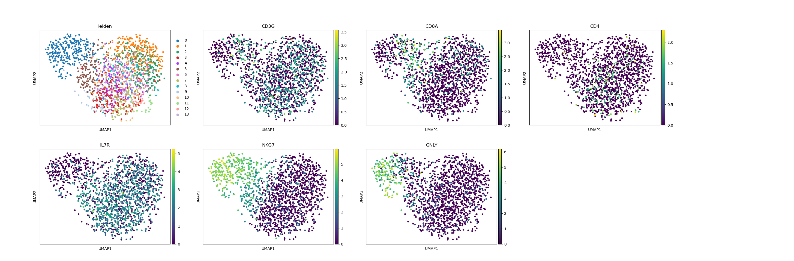

Note
Click here to download the full example code
reclustering on specific louvain clusters¶
This example demonstrates who to perform a reclustering on a selected subset of louvain clusters. You will want to do this for example during the process of celltype annotation, when the clusters do not have a sufficient resolution to seperate all clusters and mixed cell populations still exist.
Out:
/.local/lib/python3.7/site-packages/anndata/_core/anndata.py:1094: FutureWarning:
is_categorical is deprecated and will be removed in a future version. Use is_categorical_dtype instead
In total 1409 highly variable genes selected within cluster
/.local/lib/python3.7/site-packages/anndata/_core/anndata.py:1094: FutureWarning:
is_categorical is deprecated and will be removed in a future version. Use is_categorical_dtype instead
/.local/lib/python3.7/site-packages/anndata/_core/anndata.py:1192: FutureWarning:
is_categorical is deprecated and will be removed in a future version. Use is_categorical_dtype instead
not_labeled 943
CD4 T-cell 853
CD8 T-cell 438
NK cell 270
Name: celltype, dtype: int64
import besca as bc
import scanpy as sc
#load and preprocess data (here we will start from a preprocessed dataset)
adata = bc.datasets.pbmc3k_processed()
#extract subset using the recluster function whcih is part of the reclustering (rc) toolkit
adata_subset = bc.tl.rc.recluster(adata, celltype=('2', '3', '4', '5', '6','8', '9', '10', '11', '12'), celltype_label = 'leiden', resolution = 1.2)
#visualize the new clusters
sc.pl.umap(adata_subset, color = ['leiden', 'CD3G', 'CD8A', 'CD4', 'IL7R', 'NKG7', 'GNLY'])
#append new celltype labels to the subclusters.
# This is an approximative hand annotation that should be dealt into more widths.
new_labels = ["NK cell", #0
"CD4 T-cell", #1
"CD8 T-cell", #2
"CD4 T-cell", #3
"CD8 T-cell", #4
"CD8 T-cell", #5
"CD4 T-cell", #6
"CD4 T-cell", #7
"CD4 T-cell", #8
"CD4 T-cell", #9
"CD4 T-cell", #10
"CD4 T-cell", #11
"CD4 T-cell" #12
] #10
#merge the labels back into the original adata object
#note this will overwrite what ever was saved in adata.obs.celltype;
#Here is was not assigned yet.
bc.tl.rc.annotate_new_cellnames(adata, adata_subset, names=new_labels, new_label = 'celltype')
print(adata.obs.celltype.value_counts())
Total running time of the script: ( 0 minutes 13.716 seconds)